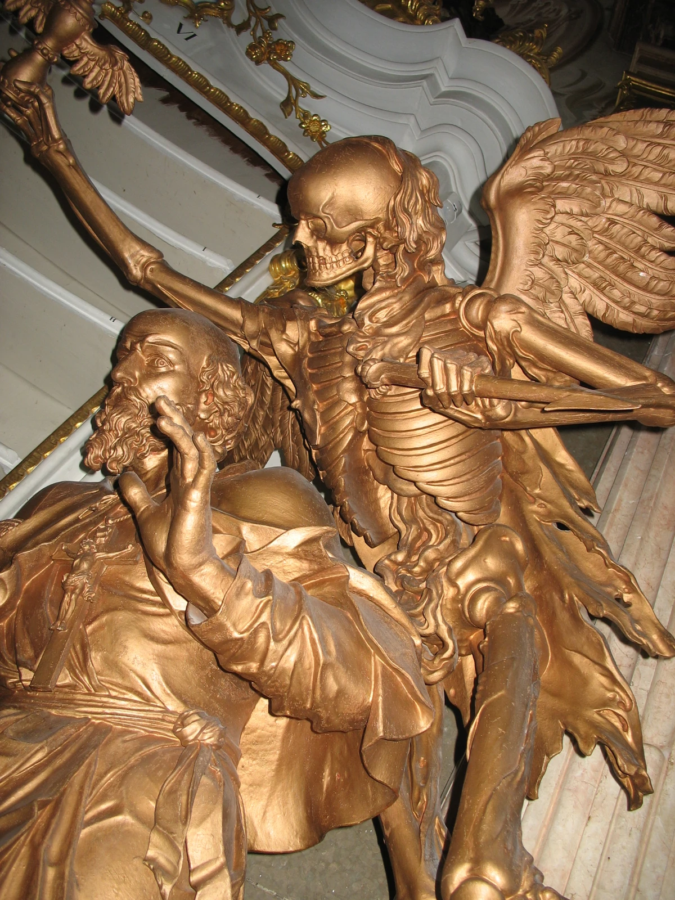
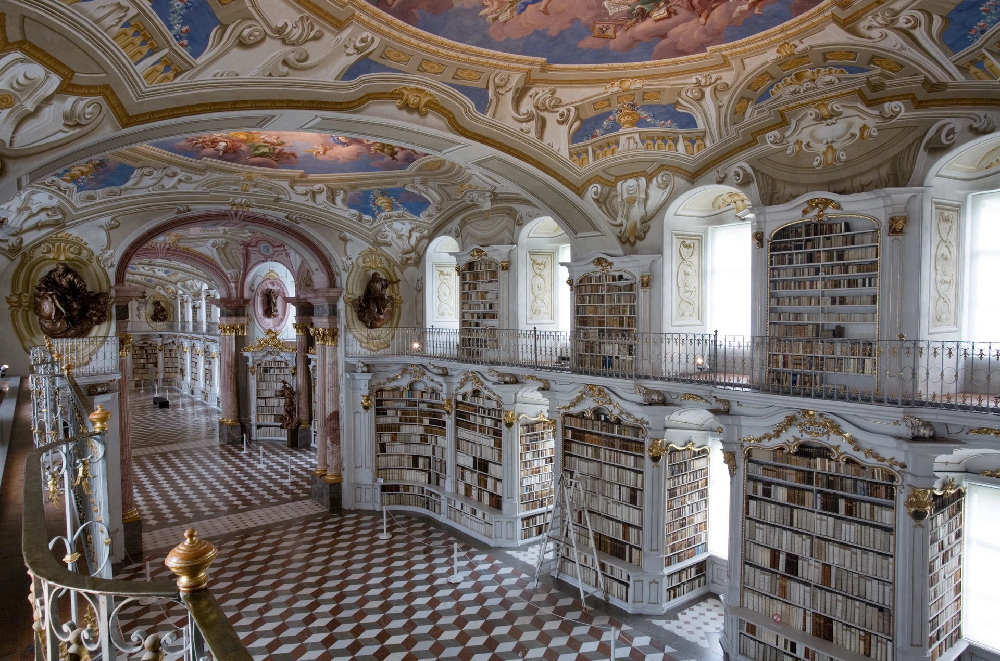
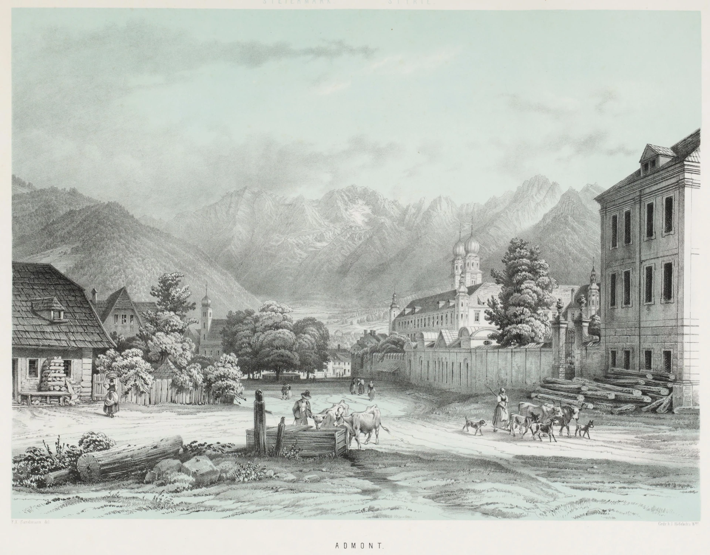
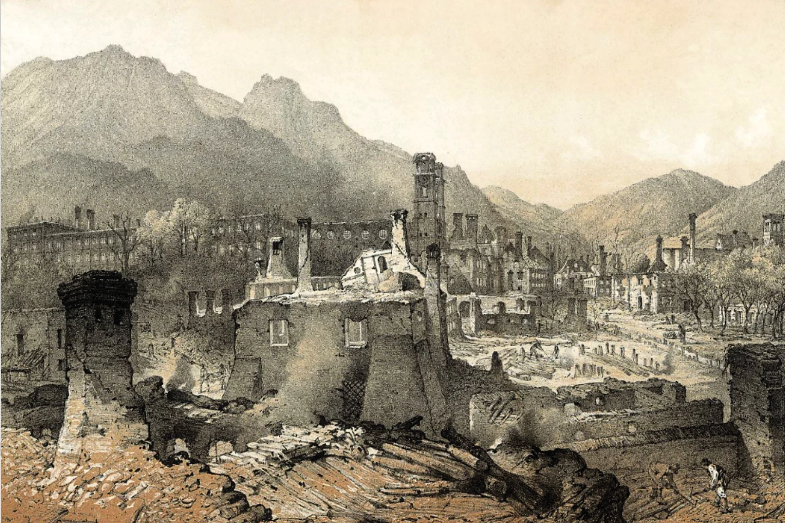

 아직 펼치지 않은 카드
아직 펼치지 않은 카드
1865년 4월, 알프스 골짜기의 아드몬트 수도원에 큰불이 났어요. 불이 지나간 뒤 남은 것은 도서관이었어요. 시간 막대를 밀어, 1681년부터 2022년까지 같은 수도원을 담은 그림 네 장을 지나가 보세요.
산속 수도원에 큰불이 났는데, 도서관만 살아남았대. 옛날 그림부터 오늘 사진까지 넘겨 볼까?
검수 전 시안이에요(기준서 2판). 장면에는 아드몬트 수도원의 설명, 목격자의 글, 1890년대의 여행기(크라우스), 오스트리아 가톨릭 언론에 있는 것만 옮겼어요. 상상은 ‘눈 감고 상상해 보기’에만 썼어요.
1776년, 건축가 요제프 후버(Josef Hueber)가 설계한 도서관 홀이 다 지어졌어요. 길이 70m의 방이 세 부분으로 나뉘어 있어요.
천장의 그림 일곱 개는 바르톨로메오 알토몬테(Bartolomeo Altomonte)가 여든이 넘어 그렸어요. 생각과 말에서 시작해 학문을 지나, 둥근 천장 한가운데의 하느님의 계시에 이르는 사람의 앎의 길을 그렸다고 수도원은 설명해요.

“빛이 방을 채우듯, 마음도 채워야 한다.”
아드몬트 수도원 누리집의 도서관 설명 · 이 안내서가 옮김
지금 홀에는 책이 6만 권쯤 놓여 있어요. 수도원 전체로는 20만 점쯤의 책이 있어요. 8세기부터 내려온 손글씨 책이 1,400권 넘게, 1500년보다 앞서 찍은 책이 530권 있어요.
하얀 도서관에 책이 6만 권이나 있대! 천장에는 그림이 일곱 개나 있어.
물어보기빛이 마음을 채운다는 건 무슨 뜻일까?
같은 수도원을 담은 그림 네 장이 있어요. 1681년의 판화, 1856년 이전의 석판화, 1865년 큰불 뒤의 그림, 그리고 2022년의 사진이에요.
네 그림은 보는 방향이 서로 달라요. 그래도 수도원 성당(수도원 한가운데의 큰 교회)의 두 탑을 따라가면, 불이 지나간 자리가 보여요.
시간 막대를 밀거나 연도를 눌러, 같은 수도원을 담은 그림 네 장을 지나가 보세요.




1681년 · 게오르크 마테우스 비셔의 판화 「아드몬트」, 1681년(비셔의 슈타이어마르크 그림 지도책에서) · 판화: 게오르크 마테우스 비셔 · 퍼블릭 도메인 · 위키미디어 공용1856년 이전 · 프란츠 크사버 잔트만이 그린 「아드몬트」 석판화, 1856년 이전 · 석판화: 프란츠 크사버 잔트만의 그림 · 퍼블릭 도메인 · 위키미디어 공용1865년 · 1865년 큰불 뒤 · 북쪽에서 수도원 성당 쪽을 본 그림, 앞쪽은 불탄 프라이들펠더 집(프란츠 팡크하우저) · 그림: 프란츠 팡크하우저 · 퍼블릭 도메인 · 위키미디어 공용2022년 · 남서쪽 하늘에서 본 오늘의 아드몬트 수도원(2022년 사진) · 사진: C.Stadler/Bwag · CC BY-SA 4.0 · 위키미디어 공용
네 때를 다 지나왔어요. 성당은 새 모습이 되었고, 도서관은 1776년의 모습 그대로 남았어요.
옛날 그림부터 오늘 사진까지 넘겨 볼까? 성당 탑 모양을 잘 봐!
물어보기불이 나기 전과 뒤에, 무엇이 가장 많이 달라졌어?
1865년 4월 27일 목요일 오후, 아드몬트 마을 한가운데의 농가 건물에서 불이 났어요. 불길은 곧 이웃 건물로, 그리고 수도원으로 번졌어요.
불을 본 블리트문트 추르첸탈러(Blitmund Tschurtschenthaler) 신부는 이렇게 적었어요.
“얼마 안 되어 시장 한가운데부터 수도원 성당까지 양쪽 집들과 옛 아만두스 성당이 불바다에 휩싸였다… 갑자기 무서운 외침이 울렸다. 수도원이 탄다!”
목격자 블리트문트 추르첸탈러 신부 · 아드몬트 수도원 누리집에서 · 이 안내서가 옮김
불은 닷새 동안 탔어요. 그 뒤에 도서관과 참사회실(수도자들이 모여 회의하는 방), 새 건물, 제의실(미사 때 입는 옷과 그릇을 두는 방)은 거의 그대로 남았어요. 1890년대에 크라우스가 쓴 여행기는 “사람의 힘을 넘는 애씀으로” 도서관을 건져 냈다고 적었어요. 마을 사람 여럿이 목숨을 잃었어요.
수도원은 서둘러 ‘새 아드몬트’를 짓기로 했어요. 성당은 신고딕 양식(중세 고딕을 본뜬 그 시대의 양식)으로 새로 지었고, 도서관과 참사회실은 바로크 모습 그대로 두었어요. 크라우스의 여행기에 따르면, 다시 짓기를 이끈 카를만 히버(Karlmann Hieber) 수도원장은 새 성당의 봉헌식(새 성당을 하느님께 바치는 첫 예식)을 보지 못하고 1868년 11월에 세상을 떠났어요.
마을에서 시작된 불이 수도원까지 번졌대. 그래도 도서관은 살아남았어.
물어보기불이 났을 때 사람들은 도서관을 어떻게 지켰을까?
불이 난 이튿날, 4월 28일이에요. 불은 아직 다 꺼지지 않았어요.
그날, 수도원의 한 참사 수도자(수도원 회의에 드는 수도자)는 이렇게 적었어요.
“오늘, 4월 28일, 아드몬트는 더는 없다. 도서관 말고는 모두 타 버렸다…”
그때 수도원의 한 참사 수도자 · 아드몬트 수도원 누리집과 katholisch.at(2024)에서 · 이 안내서가 옮김
불이 난 다음 날, 수도사님이 ‘도서관 말고는 다 탔다’고 적었대.
물어보기도서관만 남은 걸 본 수도사님은 어떤 마음이었을까?
눈 감고 상상해 보기
1865년 4월 28일 아침이에요. 골짜기에 연기가 낮게 깔려 있고, 탄 나무 냄새가 코를 찔러요. 무너진 벽 사이를 지나 걸어가요. 그 너머에 긴 건물 하나가 서 있어요. 창 너머로 하얀 책장과 금빛 장식이 보여요.
눈을 감아 봐. 아침인데 연기가 자욱해. 탄 냄새가 나. 무너진 벽 사이를 걸어가면, 하얀 책장이 그대로 있는 방이 보여!
불이 난 이튿날, 한 수도자는 그날을 한 줄로 적었어요. 내가 오늘 하루를 한 줄로 남긴다면, 무엇이라고 적을까요?
수도사님처럼 오늘 있었던 일을 한 줄로 적는다면, 뭐라고 쓸래?
마음에 닿는 한 줄을 고르거나 직접 써 보세요. 한 줄을 남기면 이 자리의 도장이 찍혀요. 이 기기에만 저장돼요.
이야기를 보다 궁금해질 만한 것들이에요. 답을 읽거나 짧은 영화로 보세요.

아직 펼치지 않은 이야기예요. 누르면 이야기가 펼쳐지고 색이 돌아와요. 더 알고 싶으면 근거를 따라가 보세요.
다 펼치면, 다음에 오실 때 새 이야기가 찾아와요.
오늘의 뒷이야기는 여기까지예요. 다음에 오시면 새 이야기가 기다리고 있어요.
펼친 뒷이야기 · 누르면 다시 볼 수 있어요
불탄 집 수도원 누리집(2024)은 집 20채가 탔다고 하고, 오스트리아 포럼(위키백과를 옮긴 백과)은 시장의 집 22채라고 해요.
목숨을 잃은 사람 수도원과 katholisch.at은 ‘마을 사람 여럿’이라고만 쓰고, 크라우스의 여행기(1890년대)는 여섯 명, 1915년 신문에 실린 한 신부의 회고와 오스트리아 포럼은 일곱 명이라고 적어요.
남은 곳 이튿날의 한 줄은 ‘도서관 말고는 모두 타 버렸다’고 하지만, 수도원 누리집은 참사회실과 새 건물, 제의실도 거의 그대로 남았다고 해요.
불이 탄 날수 수도원 누리집은 닷새, 1915년 신문에 실린 한 신부의 회고는 꼬박 나흘이라고 해요. 수도원의 『박물관 신문』(2015)은 5월 2일에야 불이 완전히 꺼졌다고 적어요.
새 성당의 봉헌 수도원 누리집과 katholisch.at은 1868년, 크라우스의 여행기는 1869년 9월 12일이라고 적어요. 크라우스는 히버 수도원장이 그날을 보지 못하고 1868년 11월 13일에 세상을 떠났다고 해요.
책은 몇 권 앞면 이야기는 홀에 책이 7만 권쯤 있다고 하고, 수도원 누리집은 6만 권쯤이 놓여 있다고 해요.
확인한 날 · 2026년 11월 18일 · 바뀌기 쉬운 정보라 정기적으로 다시 확인해요
도서관과 박물관은 계절마다 여는 때가 달라요. 겨울에는 단체 예약만 받는 때가 있으니, 가기 전에 수도원 누리집에서 확인하세요.
시간 막대로 네 때를 모두 지나오면 카드에 금박이 입혀져요.
아이와 함께 끝까지 보면 카드가 채색돼요.
‘처음 만나는 기독교 문화’의 깊은 카드예요. 실제 인물의 사진은 쓰지 않았어요. 카드 단계와 남긴 글은 이 기기에만 저장돼요.
영화처럼 보기 · 약 3분
화면을 누르거나 → 키를 누르면 넘어가요. 그냥 두어도 자막이 저절로 넘어가요.